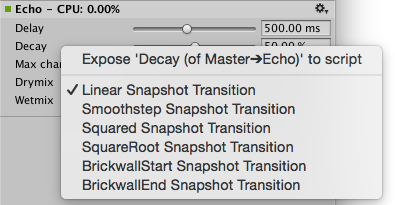

AudioGroup Inspector
Selecting an AudioGroup in the AudioGroup Hierarchy, the AudioGroup View or the Project windowA window that shows the contents of your Assets folder (Project tab) More info
See in Glossary (as a sub-asset) will show the inspectorA Unity window that displays information about the currently selected GameObject, asset or project settings, allowing you to inspect and edit the values. More info
See in Glossary for that AudioGroup.
The inspector for the AudioGroup consists of a number of elements:
Inspector Header
At the top of the AudioGroup Inspector there is the name of the AudioGroup, along with the gear dropdown common to all Object Inspectors.

The gear menu contains the following functionality:
- Copy all effect settings to all snapshots: Use this setting to copy all the effect parameter, volume and pitch settings of this AudioGroup to all the other snapshots present within the Audio Mixer. This setting lets you quickly make all snapshots ‘like this one’ for this AudioGroup.
- Toggle CPU usage display: This toggles CPU performance information for all the effects present in the AudioGroup Inspector. Use this to understand which effects in your DSP setup consume the most resources. To use this setting, enable Enable FMOD Profiling (Edit > Preferences > Diagnostics > Audio).
Edit in Playmode


When in Play mode within Unity, the Inspector for an AudioGroup includes a button at the top called Edit in Play Mode. By default, the parameter values of an Audio Mixer aren’t editable in Play mode and are fully controlled by the current snapshot within the game.
Enable Edit in Play Mode to override the snapshot system and make edits to the current snapshot directly during Play mode. This is a great way to mix and master a game while playing it in real time.
Pitch slider
At the top of all AudioGroup Inspectors, there is a slider that defines the pitch of playback through that AudioGroup. To change the pitch, either use the slider or enter the pitch manually into the text field to the right.

Attenuation Unit
Every AudioGroup within an Audio Mixer has exactly 1 Attenuation Unit.
The Attenuation Unit is where you can apply attenuation / gain to the audio signal passing through the AudioGroup. The attenuation is computed and applied to the signal ‘at the unit’ (not combined with other attenuation settings and applied at the voice source). This allows very complex and interesting setups to be created when combined with Sends / Receives and non linear DSP effects. Attenuation can be applied to –80dB (silence) and gain can be applied to +20dB.

Every Attenuation Unit has a Volume Unit (VU) meter in the inspector. This meter shows the audio signal levels at that point in the signal chain (just after attenuation is applied). This means that if you have DSP effects or Receives after the Attenuation Unit, the metering information seen in the AudioGroup strip for that AudioGroup will be different from the metering information at the Attenuation Unit. This is a great way to debug the signal chain of an AudioGroup by dragging the Attenuation Unit up and down the processing chain to check the metering at different points.
The VU meter shows both RMS and peak hold values.
- To move the Attenuation Unit (or any effect) up or down the signal chain, select the Unit’s header and drag up or down the inspector to reposition it.
- To change the attenuation setting, move the slider above the metering or enter a value in the text box.
Effect Units
Effect Units are general DSP effects that modify the audio signal being played through the AudioGroup, for example Highpass or Reverb. Effect Units can also process side-chain signal information that’s sent to it from a Send Unit. The interface of each Effect Unit varies, but generally, it offers a range of parameters that you can adjust to change the application of the effect on the signal. For example, a Parameter EQ effect has 3 parameters that modify how the signal is processed:
Unity comes with a collection of built-in effects that you can use within an AudioGroup. You can also create custom DSP effect plug-insA set of code created outside of Unity that creates functionality in Unity. There are two kinds of plug-ins you can use in Unity: Managed plug-ins (managed .NET assemblies created with tools like Visual Studio) and Native plug-ins (platform-specific native code libraries). More info
See in Glossary and use them within an Audio Mixer.
- To add an effect to the AudioGroup, select Add Effect button at the bottom of the AudioGroup Inspector.

To change the ordering of the effect within the AudioGroup, select the effect header and drag up or down to place it in a different position.
To remove the effect from the AudioGroup, right-click the effect header and select Remove this effect.
Send Units
Sends allow you to diverge the audio signal flow and send a potentially attenuated copy of the signal to be used as a side-chain within another Effect Unit, for example, a side-chain compressor. You can insert Sends anywhere in the signal chain, allowing divergence of signal at any point.

Initially, when Sends are added to an AudioGroup, they don’t send to anything, and the Send Level is set to 80dB. To send to another Effect Unit, you must already have an Effect Unit that can accept side-chain signals in the Audio Mixer somewhere. After you select the destination Effect Unit, you need to increase the Send Level to send the signal to the destination.
- To add a Send to an AudioGroup, select Add Effect at the bottom of the AudioGroup Inspector and choose Send.
- To connect a Send to another Effect Unit (capable of receiving signal), choose the destination from the dropdown in the Send Unit Inspector.
- Set the level of signal sent to the destination with “Send Level”
Receive Units
Receives take the audio signal that’s sent to them from Sends and mix it with the current signal passing through their AudioGroup. There are no parameters to a Receive.

Note: If you Solo a Receive unit, the sound stops playing. This is by design.
Duck Volume Units
Duck Volume Units allow you to create side-chain compressionA method of storing data that reduces the amount of storage space it requires. See Texture Compression, Animation Compression, Audio Compression, Build Compression.
See in Glossary from signal sent from Sends. Duck Volume is a great way to control the attenuation of a signal based on audio being played somewhere else in the Audio Mixer.

Duck Volume Units can be added like any other Effect Unit and must have signal sent to them from at least one Send to be useful.
Common options
Each unit within the AudioGroup Inspector has several common features.
Gear options
- Bypass - Toggle this setting to bypass the Effect Unit completely, which effectively disables it in the signal chain.
- Copy Effect Settings to all Snapshots - Select this setting to copy all the parameter values within this Effect Unit to all the other Snapshots in the Audio Mixer. This is useful when you add a new Effect Unit, make changes to that Effect Unit and want those settings to be the same across all Snapshots.
- Add Effect Before - Allows the insertion of an Effect Unit before the current Effect Unit in the AudioGroup. Select the desired effect from the menu shown.
- Add Effect After - Allows the insertion of an Effect Unit after the current Effect Unit in the AudioGroup. Select the desired effect from the menu shown.
- Remove This Effect - Remove this Effect Unit completely from the Audio Mixer. Attenuation Units can’t be removed from AudioGroups.
Wet Mixing
If you enable Wet Mixing in a DSP effect, it lets you control the proportion of the incoming audio signal that the effect processes. Wet Mixing effectively creates a dry channel around the effect. You can then select the effect slot and set the percentage of audio signal that’s passed through the DSP effect unit. The rest of the signal is passed through the dry channel. The following diagram illustrates this concept:
Wet mixing is good for when a user wants to control the influence an effect has on the mix and preserve a percentage of the original signal.

Exposed parameters
Exposed parameters allow you to bypass the Snapshot system of an Audio Mixer and set the value of any parameter within an Audio Mixer from script. When an exposed parameter is set via script, that parameter is locked to that value and will not change as the game transitions Snapshots.
You can expose a parameter with an Audio Mixer via the AudioGroup Inspector. For any parameter shown in the Inspector (including Pitch, Volume, Send Level, and Wet Level), you can right-click the name of the parameter and choose Expose X to script.

To check your exposed parameters in an Audio Mixer, in the Audio Mixer window, select Exposed Parameters.

- To rename an exposed parameter, right-click the name of the exposed parameter and select Rename. This name will be how you reference the parameter from the AudioMixer API.
- To delete an exposed parameter, right-click the name of the exposed parameter and select Delete.
Transition overrides
When transitioning between Snapshots, by default all transitions are done with linear interpolation from the beginning to target values. In some cases this transition behaviour is not desired however, for example when it’s preferable to brick-wall the change at the start or end of the transition.
You can change the transition behavior of all the parameters available within an Audio Mixer. Transition behaviors are defined per-Snapshot, and the target Snapshot defines the transition behavior.
To set the transition override for a particular parameter for the current Snapshot, right-click the parameter name and select the required transition type.

Audio Mixer inspector
The Audio Mixer asset has an Inspector window that allows you to specify the overall activation/suspense behavior of the mixer. Audio Mixers are activated when any audio sourceA component which plays back an Audio Clip in the scene to an audio listener or through an audio mixer. More info
See in Glossary plays into the mixer and stays active as long as there is a driver that supplies audio data to the mixer.
Another way to activate mixers it to select Audio Preview in the SceneA Scene contains the environments and menus of your game. Think of each unique Scene file as a unique level. In each Scene, you place your environments, obstacles, and decorations, essentially designing and building your game in pieces. More info
See in Glossary view. This activation behavior is different from that of scene objects such as MonoBehaviors, so a mixer may be active (and therefore consuming CPU) even outside of Play mode.
To avoid running out of CPU resources in a project that contains many mixers that aren’t supposed to be running all at the same time (say, because specific levels use certain specialized mixers), the audio mixers have functionality built-in to put themselves into suspended mode in which all processing stops. To do this in a natural way that doesn’t lead to audible artefacts such as clicks or missing reverb/echo tails each mixer uses the following strategy:
As long as any audio source is playing into this mixer or the mixer is receiving audio data from other sub-mixers the mixer will keep itself active. After the last sound source has finished playing, the mixer waits for a second and then continually uses loudness-measurement at its own output to decide if the mixer should suspend itself. This action is needed because reverb and echo tails can potentially decay very slowly. To change the loudness threshold at which the mixer suspends itself:
- Select the Audio Mixer asset to show the Inspector window.
- Enable Auto Mixer Suspend.
- Set Threshold Volume. Minus 80 dB is the default threshold volume and matches the lowest value of the faders in the mixer. In practice it’s often possible to set it to a significantly larger value to get quicker deactivation and avoid intermediate CPU spikes that could cause stutter.